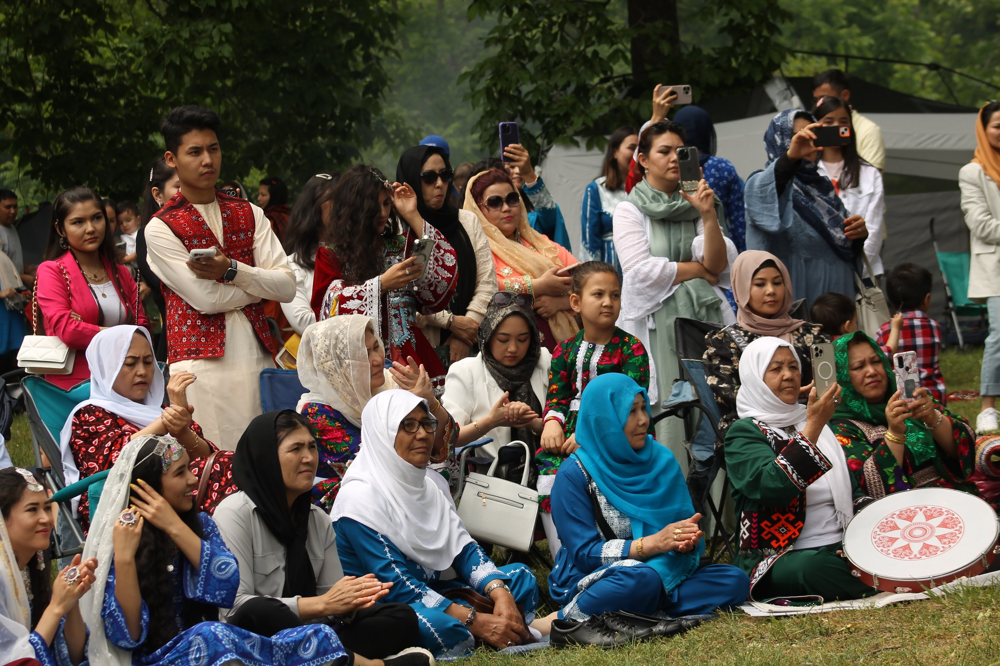
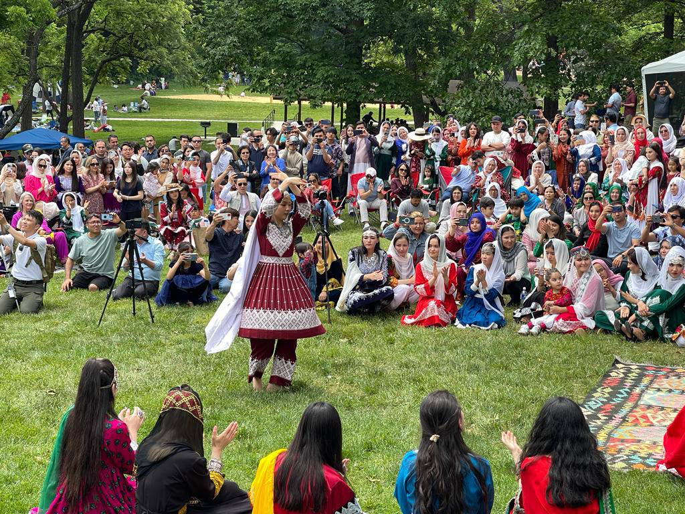
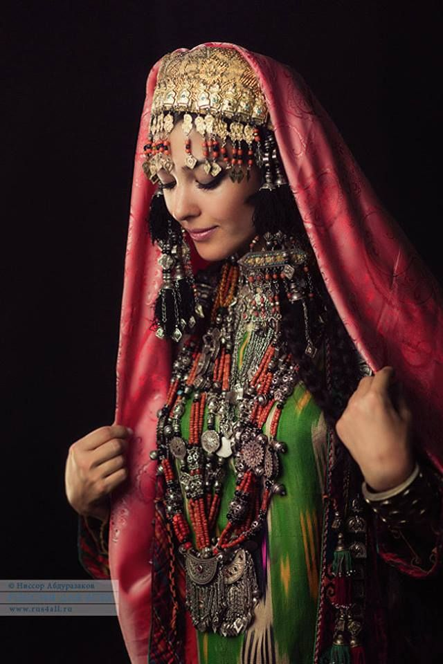
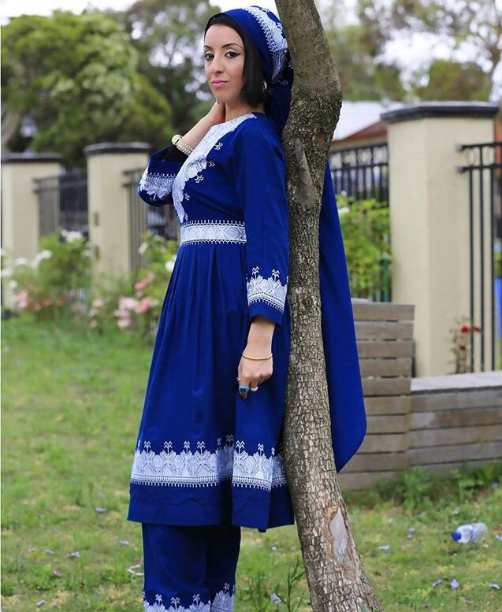
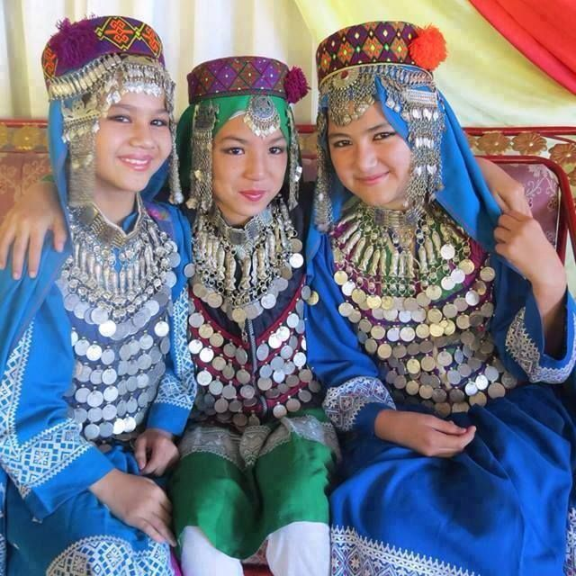
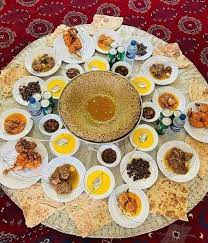
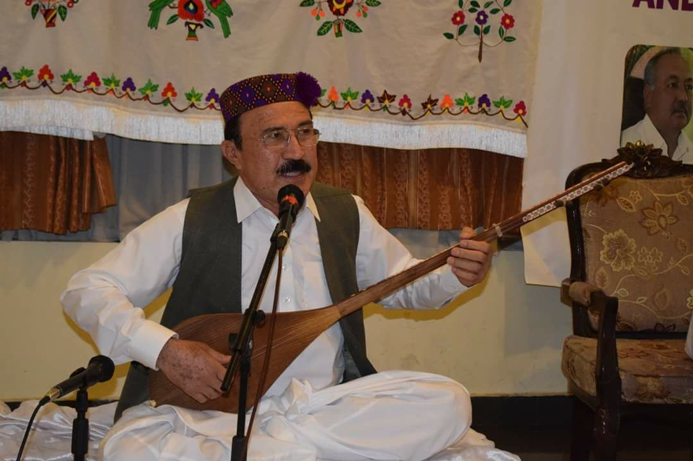

People of Daikondy
Daikundi is a province located in the central highlands of Afghanistan, known for its stunning landscapes, including mountains, valleys, and rivers. The province is inhabited mainly by Hazara people, with a rich cultural heritage that includes traditional music, art, and a deep appreciation for oral history. Daikundi's communities maintain strong ties to family and traditions, with an emphasis on communal support. In terms of lifestyle, agriculture plays a central role, with many people engaged in farming, particularly in the fertile valleys. Livestock farming is also a significant activity. Despite facing challenges like limited access to modern infrastructure, the people of Daikundi are resilient, with many actively pursuing education, especially in urban centers. Daikundi's culture also reflects a strong connection to nature, with many festivals and events celebrating the natural environment and seasonal changes. The local cuisine is rich and varied, often featuring wheat, rice, dairy products, and traditional Afghan dishes like kebabs and pilafs. This province remains an important part of Afghanistan’s diverse cultural fabric, with a unique blend of historical significance and modern-day determination to overcome challenges. The culture of the people of Daikundi is rooted in traditions, values, and the simple, warm lifestyle of mountain communities. Most of the population belongs to the Hazara ethnic group and speaks Dari (Persian). Their culture emphasizes hospitality, respect for elders, social cooperation, and a strong focus on education. Local music, traditional clothing, poetry, and storytelling are important aspects of their cultural life. Despite limited resources, the people of Daikundi have a strong interest in learning, and women actively participate in cultural and educational activities.
Daikundi is a province located in the central highlands of Afghanistan, known for its stunning landscapes, including mountains, valleys, and rivers. The province is inhabited mainly by Hazara people, with a rich cultural heritage that includes traditional music, art, and a deep appreciation for oral history. Daikundi's communities maintain strong ties to family and traditions, with an emphasis on communal support. In terms of lifestyle, agriculture plays a central role, with many people engaged in farming, particularly in the fertile valleys. Livestock farming is also a significant activity. Despite facing challenges like limited access to modern infrastructure, the people of Daikundi are resilient, with many actively pursuing education, especially in urban centers. Daikundi's culture also reflects a strong connection to nature, with many festivals and events celebrating the natural environment and seasonal changes. The local cuisine is rich and varied, often featuring wheat, rice, dairy products, and traditional Afghan dishes like kebabs and pilafs. This province remains an important part of Afghanistan’s diverse cultural fabric, with a unique blend of historical significance and modern-day determination to overcome challenges. The culture of the people of Daikundi is rooted in traditions, values, and the simple, warm lifestyle of mountain communities. Most of the population belongs to the Hazara ethnic group and speaks Dari (Persian). Their culture emphasizes hospitality, respect for elders, social cooperation, and a strong focus on education. Local music, traditional clothing, poetry, and storytelling are important aspects of their cultural life. Despite limited resources, the people of Daikundi have a strong interest in learning, and women actively participate in cultural and educational activities.
Daikondy Cloths
  
The traditional clothing of the Hazara people is simple, beautiful, and suited to the cold climate of central Afghanistan. Hazara men typically wear loose garments in dark colors, along with vests and a special hat known as "Qaraqol" or "Pakol." Hazara women wear long, colorful dresses decorated with fine embroidery, along with a headscarf or shawl. Silver jewelry, colorful beads, and local hand-stitched designs are part of their attire, reflecting their cultural identity. Their clothing represents art, simplicity, and harmony with nature.Hazara men traditionally wear simple yet practical clothing suited for the mountainous regions of central Afghanistan. Their outfit usually includes a loose long shirt (perahan) and trousers (tunban), often in dark or neutral colors. Many also wear a woolen vest or coat for warmth. A distinctive feature of their attire is the traditional hat, such as the Qaraqol or Pakol, which provides protection against the cold and adds cultural identity to their appearance.The traditional clothing of the Hazara people is simple, beautiful, and suited to the cold climate of central Afghanistan. Hazara men typically wear loose garments in dark colors, along with vests and a special hat known as "Qaraqol" or "Pakol." Hazara women wear long, colorful dresses decorated with fine embroidery, along with a headscarf or shawl. Silver jewelry, colorful beads, and local hand-stitched designs are part of their attire, reflecting their cultural identity. Their clothing represents art, simplicity, and harmony with nature.Hazara men traditionally wear simple yet practical clothing suited for the mountainous regions of central Afghanistan. Their outfit usually includes a loose long shirt (perahan) and trousers (tunban), often in dark or neutral colors. Many also wear a woolen vest or coat for warmth. A distinctive feature of their attire is the traditional hat, such as the Qaraqol or Pakol, which provides protection against the cold and adds cultural identity to their appearance.
"United in culture,
rich in heritage —
this is Afghanistan."
Food of Daykondi
The food of the people of Daykundi is mostly based on local and natural products. Dry bread, soup (Aash), yogurt, local dairy products, and dishes such as Qabili, Manto, Aash Reshteh, and vegetarian dishes like pumpkin and eggplant are some of the common foods. The people of this province are fond of preparing simple, healthy, and nutritious meals that align with their traditional culture.
Entertainment and Pastimes of the People of Daykundi"
People in Daykundi engage in various traditional and cultural activities that reflect their rich heritage. Some common pastimes and entertainment activities include: 1. Music and Dance: Traditional music and dance play an important role in the social life of Daykundi. People enjoy singing folk songs and participating in lively dances, especially during festivals and gatherings. 2. Poetry: Poetry, particularly oral poetry, is a significant form of entertainment. Many people engage in storytelling, reciting poems, and sharing their knowledge and life experiences. 3. Sports and Games: Traditional sports like Buzkashi, Polo, and wrestling are still popular among the people of Daykundi. These activities bring people together and are often held during cultural events and local festivals. 4. Picnics and Social Gatherings: The people of Daykundi often gather with family and friends for outdoor picnics. Enjoying the natural beauty of the region and spending time with loved ones is an important social activity. 5. Handicrafts: Many people, particularly women, engage in the art of handicrafts, making beautiful traditional items such as carpets, embroidery, and other handmade goods.
recreational place in Daikondy
The recreational places in Daikundi province offer beautiful nature and scenic views, providing a great opportunity for relaxation and peace. This province features valleys, natural springs, fruit orchards, and green spaces where people go for leisure and outings. One of the most popular recreational spots is "Sadat Valley," known for its natural beauty and loved by locals. Additionally, almond gardens, clear water springs, and surrounding mountains create a pleasant environment for both local visitors and tourists. People usually gather with family or friends for picnics and to enjoy the peaceful nature

Daikundi
is one of
Afghanistan’s
most peaceful
and culturally
rich provinces.